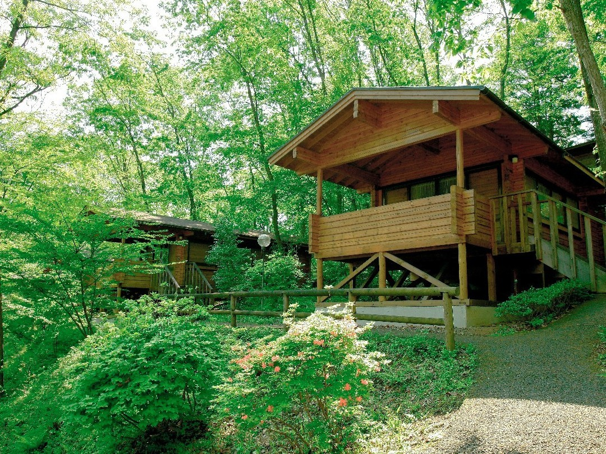

秩父のキャンプに行きました

ＰＩＫＡ秩父というコテージに泊まりました。 そこで、主に自然探検・秩父市内観光・バーベキューを行いました。 秩父市内では、名物のわらじかつやみそポテトを食べました。 キャンプした場所は山の中で、夏場でも涼しく快適でした。雨も長時間降らず、有意義な時間を過ごせました。 受験や文化祭などが終わり、落ち着いたころにまた秩父に遊びに行きたいです。 PIKA秩父公式
ＰＩＫＡ秩父というコテージに泊まりました。
そこで、主に自然探検・秩父市内観光・バーベキューを行いました。
秩父市内では、名物のわらじかつやみそポテトを食べました。
キャンプした場所は山の中で、夏場でも涼しく快適でした。雨も長時間降らず、有意義な時間を過ごせました。
受験や文化祭などが終わり、落ち着いたころにまた秩父に遊びに行きたいです。